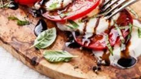
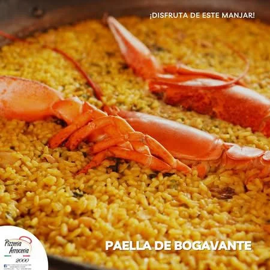
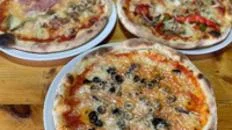
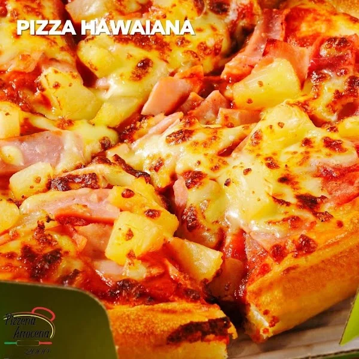
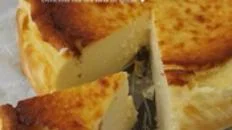

Pizzería Arrocería 2000
Una carta para compartir
Arroces, pizzas, platos mediterráneos y un momento dulce. Consulta la carta del restaurante y confirma sus opciones actuales.

Sabores junto al mar
Arroces
El restaurante se presenta como especialista en arroces. Su carta publicada incluye paellas, arroz negro y fideuá, entre otras opciones.
Consulta variedades, encargo previo, número mínimo de personas, precio y disponibilidad directamente con el restaurante.
Ver carta publicada ↗Nuestra pizzería
Pizzas artesanas
Una opción para compartir después de la playa o en una comida en familia. La carta publicada muestra distintas pizzas, incluidas margherita y cuatro estaciones.
Las fotos son del sitio actual del restaurante; pregunta por los ingredientes y la oferta vigente.
Consultar carta ↗
Más para elegir
Cocina mediterránea y más
La carta compartida por el restaurante incluye entrantes, ensaladas, pastas, carnes y pescados. Su Instagram también menciona pollo a l’ast.


Carta enlazada desde su perfil público de Linktree, con el nombre «Carta 2026 Castellano». Los platos y precios pueden haber cambiado. Consulta al restaurante sobre alérgenos y necesidades alimentarias antes de pedir.
Un final dulce
El postre también tiene su momento
La web del restaurante invita a probar su tarta de queso. Consulta los postres disponibles y date tiempo para la sobremesa.
Consultar disponibilidad ↗Benicàssim · Junto al mar
¿Ya sabes qué te apetece?
Pregunta por los platos de hoy, apertura y disponibilidad.